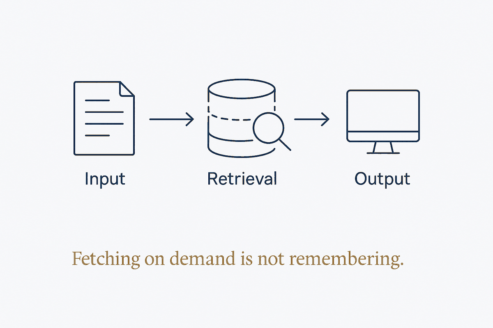

A vector store answers questions; memory decides what to keep, update and forget. Fetching on demand is not remembering — and the difference is a policy, not a database.

Ask most teams where their AI's memory lives and they point at a vector database. It isn't memory. It's a search index — it answers when asked and does nothing in between. Between the moment a fact is embedded and the moment someone happens to retrieve it, no work occurs: nothing is reconciled, nothing supersedes anything, nothing is dropped. That is the defining property, and it is passive by design.
Memory is the opposite: an active policy about what to keep, what to update, what to promote, and above all what to forget. A system that only accumulates is a system that gets slower and less true over time, because the stale facts sit alongside the current ones with equal standing and equal retrieval odds. The question "what did we decide about this customer?" has one right answer and a dozen historical near-misses, and similarity search cannot tell them apart — similarity is not recency, and it is certainly not truth.
The sharpest version of the distinction is temporal. A fact does not simply become false; it expires, and something else becomes true in its place. An employee worked at company A until May 2024 and at company B after. A flat store holds both and retrieves whichever embeds closer to the question; a memory holds both with their validity intervals and can answer "where did they work in June 2024?" correctly. Marking facts as superseded rather than deleting them is what makes a knowledge base survive contact with time.
The practical consequence is architectural, not tooling. If the only thing standing between your notes and your agent is an embedding step, you have retrieval and you have called it memory. Adding a memory layer means adding the unglamorous parts: a rule for what gets written, a rule for what expires, a consolidation pass that runs when nobody is asking, and a way to promote what proved useful. Those are decisions you make and encode — no vector database ships them, and no amount of better embeddings substitutes for them.